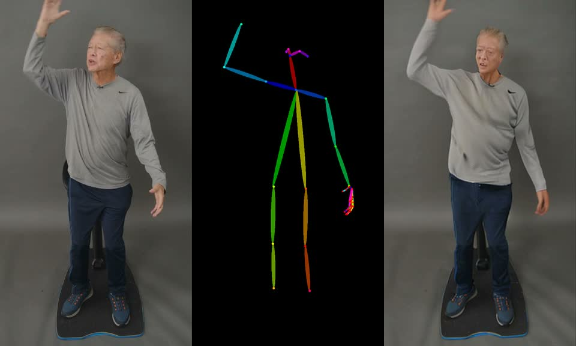
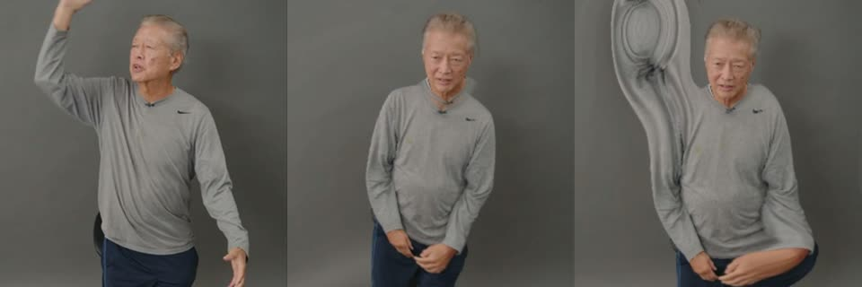

实时数字人对话
用麦克风提问，或播放一段示例问题，由 H100 当场生成回答和 512 像素画面。
听别人讲话时，数字人何时点头？
从训练以外的 16 场录制中取 103 个片段，评估对话双方。真人每分钟出现 4.06 次倾听点头，新版为 4.79 次。把对方声音错开 8 秒后，点头时机的差异仍在统计误差内。这里的点头指至少 6°、随后向回转动的俯仰动作。
肩颈联动版保留快速点头，慢速俯仰跟随身体姿态。在同一段五分钟语音回放中，五个固定种子里最后一分钟的最大持续偏角从 32.7° 降到 9.5°。持续偏角取该分钟头部俯仰中位数相对起始姿态的绝对差。这项测试衡量长对话里的姿态漂移。
同一段对话里的头、肩和手势
在来自 64 场独立对话的测试片段中，真人、旧身体模型、新模型的头部侧倾范围中位数分别为 11.2°、20.0°、13.0°。肩部位移分别为 0.164、0.116、0.209 个肩宽。侧倾幅度接近了真人，新版肩部仍摆得偏大。每段模型取五个固定种子，指标来自二维关节点。
真人抬手时，语音模型和渲染器各自做到了什么？
真人的右手腕有 12 帧高过鼻子。独立追踪生成的画面，右栏在其中 11 帧抬到相应高度，中栏是 0 帧。这一段 7.68 秒，右栏在共享 H100 上生成约需 73 秒。
看骨架与手指

另外三段对话能复现多少动作？
从 24 段留出录像里按手腕高过肩膀的帧数选择前三段。每段播放 3.2 秒，左为真人，中为输入身体骨架，右为生成画面。以高过同侧肩膀至少 0.1 个肩宽为准，三段分别复现了 22/23、0/14、0/11 帧。这里仅使用身体关节。
同一句话，转头的时机和幅度有变化吗？
看左右两边分别用了什么
左边是先前的头身联合模型，右边采用 PoseAR v2 预测头部旋转，肩膀与手臂沿用同一个模型。真人左右转头幅度为 25.8°，左边为 33.9°，右边为 24.5°。真人侧倾为 18.6°，左边为 15.4°，右边为 12.8°。数字取自最终画面的第 5 到第 95 百分位。
在另外 64 段对话、128 条人物轨迹上，用真实音频预测的头部转动速度与真人的相关性中位数为 0.146，两路语音同时错开后为 −0.045。单独错开对方语音的影响尚不明确。
肩膀和手肘的动作去哪了？
从这段 24 秒视频的最终画面重新追踪，肩肘活动范围依次为肩宽的 26.0%、12.4%、14.0%。即便输入实测轨迹，当前单照片渲染也会压掉相当一部分动作。
看第 16 秒抬手的画面

看加训 400 步后的上半身
左为真人，中为旧身体模型，右为加训候选。对 24 条留出轨迹，肩肘在动作片段交界处的平均加速度中位数下降了 27%。在这段视频里，新模型渲染后的肩肘活动范围从 12.2% 降到 9.7%，所以在线版沿用原身体模型。
从真人视频学习的身体渲染器
左为真人，右为新训练的渲染器。模型输入第一帧和后续各帧的真实关节位置。训练集共 128 段公开录像，留出 24 段，训练了 600 步。与一直显示参考图相比，肩、肘、腕附近的平均绝对像素误差从 0.0603 降至 0.0467（像素范围 0–1）。右边原始分辨率为 80×144，第 16 秒仍未画出完整抬起的手臂。
两种语音模型如何回答同一道题
按测试集原顺序播放前三题。每题都能听到提问和模型原声。请留意它能否准确复述 acorn、barrel 和 carrot。
在全部 16 道即时复述题上，两者分别答对 6 道和 13 道。另做五分钟通话，MiniCPM-o 在 6 次应回忆关键词的末轮中答对 2 次，两次更新关键词后均未答对。
上半身模型与真人对照
点击上方的「进入实时上半身对话」可以直接试自己的声音，也可以选「试听示例提问」。实时版会即时生成回答。上面的视频使用录音，方便逐帧比较动作。
转头、点头和侧倾
左边是早期在线版的动作算法，右边是用 192 段公开双人对话建立的头部动作模型。两边接收完全相同的两路语音，使用同一张脸、同一组嘴形和同一个渲染器。右边每次只根据已听到的声音和刚做过的动作选择下一段转动。
同一段真人录像：渲染器能跟上多少动作？
从左到右是真人、当前模型、输入真人头部姿态后的同一渲染器。最右栏用到了测试录像里的真实动作，用于检查渲染能力。
肩膀和上半身
同一段对话，左边是真人，右边从一张静止照片出发，用听到的声音驱动头、肩、肘和手腕。动作来自另外 8 位参与者的录像。这个实验单独评估身体，右侧保留了照片里的嘴形。
看两肩一高一低时的变化。两肩高度差的变动范围在真人轨迹上为肩宽的 22.4%，模型轨迹上为 4.5%。
眨眼
能听懂问题，也能看见画面吗？
H100 上的 MiniCPM-o 4.5 接收四次相同的提问录音，依次看到红圆、蓝圆、绿圆，最后一次没有画面。这里可以听到每一次的原始回答。前三次颜色都说对了，第四次它猜了白色。
同一段对话，两种人脸模型
听一段 20 秒的双向问答。两边使用同一位公开数据参与者的参考画面，以及同一条 Moshika 生成的回复音轨。
这是预先指定的第一段测试录音。第一题问 2 加 3，模型回答了 2；第二题问新雪是什么颜色，模型说出了白色。整组 8 段对话、16 道题中，有 10 个回答命中预设关键词。
新训练的嘴形
三栏使用同一段真人说话录音。从左到右依次是真实录像、当前在线版的嘴形算法和新训练的嘴形模型。
同一段对方语音，两种回应
把 Nuplex 公开片段里对方的独立声轨送进在线模型，连续生成了下面的 28.72 秒。这里播放的是我们模型的声音和画面。原片里 Emma 能看见对方，我们这个版本只接收声音。